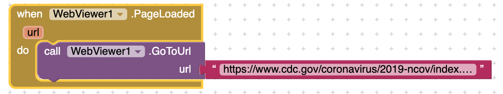

How and why are files used as a data abstraction in this app?
Files are used as data abstration in this app because it simplifies the code making it easier to be viewed or edited by a user.
Explain the List of Lists data abstraction used in this app.
List of list data abtraction used in this app by also simplfiying the code and still being able to function without creating 2 list for one function.
When and why do programmers use APIs?
Programmers use APIs because it helps them create a app easier and more effiecently, they use it when they need a structure of an app.
Provide screenshots of your enhancement projects. (At least ONE and TWO)
In the Teachable Machine activity, what inputs were easy for the program to learn to distinguish and what inputs were more difficult?
Inputs that were easy for the program to learn was hand up vs hand down something difficult for the program to learn was facial expressions and right hand vs left hand.
Search online and identify another application area for AI or machine learning besides the ones described in this lesson. Is this task hard easy for humans but hard for computers to do?
Another application using AI or machine learning are robots doing things us humans command them to do. I believe this task isnt easy for humans nor AI because humans need to type out a super intricate code for the AI to start learning steps to take.
In this lesson you saw some examples of gender bias in a machine translation program. Identify another form of unconscious bias and give an example of how it could affect a computer program. Explain how that could be a harmful effect on society, economy, or culture.
Another type of unconscious bias that machine traslation progams is racial bias. This could affect a computer program by giving opinionated information. This could be harmful to society by making some people believe what isn't true anout certain races. For example you ever have AI that may take care of your kids, they may teach your kid to speak and teaching them how one race is worst than another would hard society.
In your own words, define the concept of copyright. Why should all Internet users be aware of copyrighted material?
Copyright is a term to have control over something you created that nobody else can take. Internet users should be aware of copyright because stealing things online is easy and it may help you stay away from a law suit.
What is the difference between digital and printed documents that makes it easier to violate copyright law with digital ones?
The difference between digital and printed documents that make copyright laws easier to violate in digital is that it is easily spreadable though the internet while printed copies may only got to a few hundred people.
What is a peer-to-peer architecture? Provide an example of at least one well-known peer-to-peer network.
peer-to-peer architecture is where are are no central servers and the only way to get information is getting data from other clients. An example of one well-known peer-to-peer network is Napster, Napster functions by the central server telling clients where the information is and they go to that client to retreieve it.
What is the DMCA and why is it significant to copyright, especially with regards to electronic works (documents, images, videos, etc.)?
DMCA is the Digital Millenium Copyright Act. DMCA is significant to copyright because it ensures individuals that any violations of copyright would be punished.
What are Open Access and Creative Commons? How have they impacted the sharing of digital information?
Open Access and Creative Commons are tools to help share information out into the web with being copyrighted. They have impacted the sharing of digital information by allowing individuals to share information more freely.
The Blown to Bits book is released under a Creative Commons (CC) license, specifically the Attribution-NonCommercial-ShareAlike 3.0 license. What does this license allow people other than the authors to do? What is the relationship between the original Blown to Bits book and the newer, Blown to Bits (version 2.0) book? Did the authors of the newer version stay true to the CC license? How can you tell? (Optional) If your favorite book or movie was released with a CC license, how would you change it?
The CC license allows anyone to share and edit information in anyway they want. The newer version stay trued to the CC license because they credited the old version and allowed people to view the old text.
The chapter describes three peer-to-peer networks, each of which can be used to share copyrighted works illegally. Why did the courts find that Napster and Grokster were liable for the illegal activities of it's users, while BitTorrent is not?
Because illegal activities using BitTorrent requires a pirate content site and a content manager and BitTorrent does not provide any so no liability was on BitTorrent.
What effect have streaming services such as Netflix and Spotify had on illegal downloading activities?
Streaming services such as Netflix and Spotify has slowed down illegal downloading activities because it requires users to pay for its services making it easier for them to have copyright contracts with the people creating this content.
Why was it important for Jack Andraka to have access to research articles? In general, how has access to information helped to identify problems, develop solutions, and disseminate results?
It is important for Jack Andraka to have access to research articles because most of this cancer research is from online articles. In general, having access to information has helped many people on research like Jack Andraka learn more about something they are intrested in.
What is your responsibility as an app developer in regards to the fair use of copyrighted works such as images and music? Give one example use of a copyrighted work in an app that follows fair use guidelines and one example that violates fair use guidelines.
Responsibility as an app developer is always citing sources to give credit to the person that created the images or music. One example of a copyright work in an app that follows the fair use guidelines is using a image off of google in your slides but citing the source you got it from. An example of violated fair use guidelines is taking music off of youtube and using it in your video without crediting the singer or the person that created the song.
In your opinion, are YouTube users violating copyright terms when they make lyric videos? Why or why not?
No, they are not because they are crediting the singer of that music, they are not stealing their music and changing it to their own songs.